용접산업기사 (2016-05-08 기출문제)
1과목: 용접야금 및 용접설비제도
1. 용접 전후의 변형 및 잔류응력을 경감시키는 방법이 아닌 것은?
- 억제법
- 도열법
- 역변형법
- 롤러에 거는법
(정답률: 48%)

2. 주철과 강을 분류할 때 탄소의 함량이 약 몇 %를 기준으로 하는가?
- 0.4%
- 0.8%
- 2.0%
- 4.3%
(정답률: 52%)
3. 강의 연화 및 내부응력 제거를 목적으로 하는 열처리는?
- 불림
- 풀림
- 침탄법
- 질화법
(정답률: 90%)
4. 결정입자에 대한 설명으로 틀린 것은?
- 냉각속도가 빠르면 입자는 미세화된다.
- 냉각속도가 빠르면 결정핵 수는 많아진다.
- 과냉도가 증가하면 결정핵 수는 점차적으로 감소한다.
- 결정핵의 수는 용융점 또는 응고점 바로 밑에서는 비교적 적다.
(정답률: 49%)
5. 수소 취성도를 나타내는 식으로 옳은 것은? (단, δH : 수소에 영향을 받은 시험편의 면적 δo : 수소에 영향을 받지 않은 시험편의 면적이다.)
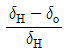
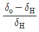
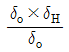
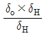
(정답률: 55%)
6. 금속간화합물에 대한 설명으로 틀린 것은?
- 간단한 원자비로 구성되어 있다.
- Fe3C는 금속간화합물이 아니다.
- 경도가 매우 높고 취약하다.
- 높은 용융점을 갖는다.
(정답률: 59%)
7. 용접금속의 응고 직후에 발생하는 균열로서 주로 결정입계에 생기며 300℃이상에서 발생하는 균열을 무슨 균열이라고 하는가?
- 저온균열
- 고온균열
- 수소균열
- 비드밑균열
(정답률: 79%)
8. 다음 중 슬래그 생성 배합제로 사용되는 것은?
- CaCO3
- Ni
- Al
- Mn
(정답률: 61%)
9. 철에서 채심입방격자인 α철이 A3점에서 γ철인 면심입방격자로, A4점에서 다시 δ철인 채심입방격자로 구조가 바뀌는 것은?
- 편석
- 고용체
- 동소변태
- 금속간화합물
(정답률: 87%)
10. E4301로 표시되는 용접봉은?
- 일미나이트계
- 고셀루로오스계
- 고산화티탄계
- 저수소계
(정답률: 85%)
11. 겹쳐진 부재에 홀(Hole)대신 좁고 긴 홈을 만들어 용접 하는 것은?
- 필릿 용접
- 슬롯 용접
- 맞대기 용점
- 플러그 용점
(정답률: 72%)
12. 투상도의 배열에 사용된 제1각법과 제3각법의 대표 기호로 옳은 것은?
- 제1각법 :
 , 제3각법 :
, 제3각법 : 
- 제1각법 :
 , 제3각법 :
, 제3각법 : 
- 제1각법 :
 , 제3각법 :
, 제3각법 : 
- 제1각법 :
 , 제3각법 :
, 제3각법 : 
(정답률: 68%)
13. 핸들이나 바퀴 등의 암 및 리브, 훅, 축, 구조물의 부재 등의 절단면을 표시하는 데 가장 적합한 단면도는?
- 부분 단면도
- 한쪽 단면도
- 회전도시 단면도
- 조합에 의한 단면도
(정답률: 80%)
14. 가는 1점 쇄선의 용도에 의한 명칭이 아닌 것은?
- 중심선
- 기준선
- 피치선
- 숨은선
(정답률: 68%)
15. 필릿 용접 끝단부를 매끄럽게 다듬질하라는 보조기호는?
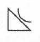
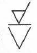
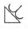
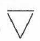
(정답률: 91%)
16. 도면의 치수 기입방법 중 지름을 나타내는 기호는?
- Sø
- SR
- ( )
- ø
(정답률: 81%)
17. KS에서 일반 구조용 압연강재의 종류로 옳은 것은?
- SS400
- SM45C
- SM400A
- STKM
(정답률: 74%)
18. 도면의 분류 중 내용에 따른 분류에 해당되지 않는 것은?
- 기초도
- 스케치도
- 계통도
- 장치도
(정답률: 55%)
19. 다음[그림]과 같이 경사부가 있는 물체를 경사면의 실제 모양을 표시할 때 보이는 부분의 전체 또는 일부를 나타낸 투상도는?
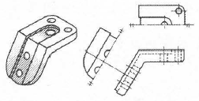
- 주투상도
- 보조투상도
- 부분투상도
- 회전투상도
(정답률: 53%)
20. 도면에서 2종류 이상의 선이 같은 장소에서 중복될 경우 가장 우선이 되는 선은?
- 외형선
- 숨은선
- 절단선
- 중심선
(정답률: 87%)
2과목: 용접구조설계
21. 용접 길이를 짧게 나누어 간격을 두면서 용접하는 방법으로 피용접물 전체에 변형이나 잔류 응력이 적게 발생하도록 하는 용착법은?
- 스킵법
- 후진법
- 전진블록법
- 캐스케이드법
(정답률: 87%)
22. 용접 구조물의 강도 설계에 있어서 가장 주의해야 할 사항은?
- 용접봉
- 용접기
- 잔류응력
- 모재의 치수
(정답률: 81%)
23. 맞대기 용접이음에서 강판의 두께 6mm, 인장하중 60kN을 작용시키려 한다. 이때 필요한 용접 길이는? (단, 허용 인장응력은 500MPa이다.)
- 20mm
- 30mm
- 40mm
- 50mm
(정답률: 48%)
24. 연강 판의 양면 필릿(fillet)용접 시 용접부의 목길이는 판 두께의 얼마 정도로 하는 것이 가장 좋은가?
- 25%
- 50%
- 75%
- 100%
(정답률: 74%)
25. 맞대기 용접이음의 덧살은 용접이음의 강도에 어떤 영향을 주는가?
- 덧살은 응력집중과 무관하다.
- 덧살을 작게 하면 응력집중이 커진다.
- 덧살을 크게 하면 피로강도가 증가한다.
- 덧살은 보강 덧붙임으로써 과대한 경우 피로강도를 감소시킨다.
(정답률: 55%)
26. 맞대기 용접 이음 홈의 종류가 아닌 것은?
- I형 홈
- V형 홈
- U형 홈
- T형 홈
(정답률: 87%)
27. 용접부 결함의 종류가 아닌 것은?
- 기공
- 비드
- 융합 불량
- 슬래그 섞임
(정답률: 80%)
28. 용접 결함 중 구조상의 결함이 아닌 것은?
- 균열
- 언더 컷
- 용입 불량
- 형상 불량
(정답률: 63%)
29. 용접 이음을 설계할 때 주의 사항으로 틀린 것은?
- 위보기 자세 용접을 많이 하게 한다.
- 강도상 중요한 이음에서는 완전 용입이 되게 한다.
- 용접 이음을 한 곳으로 집중되지 않게 설계한다.
- 맞대기 용접에는 양면 용접을 할 수 있도록 하여 용입 부족이 없게 한다.
(정답률: 92%)
30. 용융금속의 용적이행 형식인 단락형에 관한 설명으로 옳은 것은?
- 표면장력의 작용으로 이행하는 형식
- 전류소자 간 흡인력에 이행하는 형식
- 비교적 미세 용적이 단락되지 않고 이행하는 형식
- 미세한 용적이 스프레이와 같이 날려 이행하는 형식
(정답률: 50%)
31. 용접부의 피로강도 향상법으로 옳은 것은?
- 덧붙이 용접의 크기를 가능한 최소화한다.
- 기계적 방법으로 잔류 응력을 강화한다.
- 응력 집중부에 용접 이음부를 설계한다.
- 야금적 변태에 따라 기계적인 강도를 낮춘다.
(정답률: 56%)
32. 용접 후 구조물에서 잔류 응력이 미치는 영향으로 틀린 것은?
- 용접 구조물에 응력 부식이 발생한다.
- 박판 구조물에서는 국부 좌굴을 촉진한다.
- 용접 구조물에서는 취성파괴의 원인이 된다.
- 기계 부품에서 사용 중에 변형이 발생되지 않는다.
(정답률: 87%)
33. 비드 바로 밑에서 용접선과 평행되게 모재 열영향부에 생기는 균열은?
- 층상 균열
- 비드 및 균열
- 크레이트 균열
- 라미네이션 균열
(정답률: 67%)
34. 완전 용입된 평판 맞대기 이음에서 굽힘응력을 계산하는 식은? (단, σ : 용접부의 굽힘 응력, M : 굽힘 모멘트, ℓ: 용접 유효길이, h:모재의 두께로 한다.)
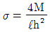
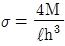
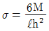
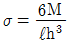
(정답률: 66%)
35. 용접부의 결함을 육안검사 검출하기 어려운 것은?
- 피트
- 언더컷
- 오버랩
- 슬래그 혼입
(정답률: 76%)
36. 현장용접으로 판 두께 15mm를 위보기 자세로 20m 맞대기 용접할 경우 환산 용접 길이는 몇 m 인가? (단, 위보기 맞대기 용접 환산계수는 4.8이다.)
- 4.1
- 24.8
- 96
- 152
(정답률: 54%)
37. 다음 중 가장 얇은 판에 적용하는 용접 홈 형상은?
- H형
- I형
- K형
- V형
(정답률: 87%)
38. 고셀룰로스계(E4311)용접봉의 특징으로 틀린 것은?
- 슬래그 생성량이 적다.
- 비드 표면이 양호하고 스패터의 발생이 적다.
- 아크는 스프레이 형상으로 용입이 비교적 양호하다.
- 가스 실드에 의한 아크분위기가 환원성이므로 용착금속의 기계적 성질이 양호하다.
(정답률: 40%)
39. 용접구조물의 수명과 가장 관련이 있는 것은?
- 작업률
- 피로 강도
- 작업 태도
- 아크 타임률
(정답률: 84%)
40. 비드가 끊어졌거나 용접봉이 짧아져서 용접이 중단될 때 비드 끝 부분이 오목하게 된 부분을 무엇이라고 하는가?
- 언더킷
- 앤드탭
- 크레이터
- 용착금속
(정답률: 79%)
3과목: 용접일반 및 안전관리
41. 피복 아크 용접에 사용되는 피복 배합제의 성질을 작용면에서 분류한 것으로 틀린 것은?
- 아크 안정제는 아크를 안정시킨다.
- 가스 발생제는 용착금속의 냉각속도를 빠르게 한다.
- 고착제는 피복제를 단단하게 심선에 고착시킨다.
- 합금제는 용강 중에 금속원소를 첨가하여 용접금속의 성질을 개선한다.
(정답률: 85%)
42. 피복 아크 용접에서 직류정극성의 설명으로 틀린 것은?
- 용접봉의 용융이 늦다.
- 모재의 용입이 얕아진다.
- 두꺼운 판의 용접에 적합하다.
- 모재를 +극에, 용접봉을 –극에 연결한다.
(정답률: 69%)
43. 전격방지기가 설치된 용접기의 가장 적당한 무부하 전압은?
- 25V 이하
- 50V 이하
- 75V 이하
- 상관 없다.
(정답률: 74%)
44. 납땜에서 경납용으로 쓰이는 용제는?
- 붕사
- 인사
- 연화아연
- 염화암모니아
(정답률: 84%)
45. 브레이징(Brazing)은 용가재를 사용하여 모재를 녹이지 않고 용가재만 녹여 용접을 이행하는 방식인데, 몇 ℃ 이상에서 이행하는 방식인가?
- 150℃
- 250℃
- 350℃
- 450℃
(정답률: 52%)
46. 피복 아크 용접봉 기호와 피복제 계통을 각각 연결한 것 중 틀린 것은?
- E 4324 – 라임 티탄계
- E 4301 – 일미나이트계
- E 4327 – 철분산화철계
- E 4313 – 고산화티탄계
(정답률: 66%)
47. 용접하고자 하는 부위에 분말형태의 플럭스를 일정 두께로 살포하고, 그 속에 전극 와이어를 연속적으로 송급하여 와이어 선단과 모재 사이에 아크를 발생시키는 용접법은?
- 전자빔 용접
- 서브머지드 아크 용접
- 불활성 가스 금속 아크 용접
- 불활성 가스 텅스텐 아크 용접
(정답률: 73%)
48. 탄산가스 아크 용접에 대한 설명으로 틀린 것은?
- 용착금속에 포함된 수소량은 피복 아크용접봉의 경우보다 적다.
- 박판 용접은 단락이행 용접법에 의해 가능하고, 전자세 용접도 가능하다.
- 피복 아크 용접처럼 용접봉을 갈아 끼우는 시간이 필요 없으므로 용접 생산성이 높다.
- 용융지의 상태를 보면서 용접할 수가 없으므로 용접진행의 양ㆍ부 판단이 곤란하다.
(정답률: 79%)
49. 고장력강용 피복아크 용접봉 중 피복제의 계통이 특수계에 해당되는 것은?
- E 5000
- E 5001
- E 5003
- E 5026
(정답률: 60%)
50. TIG, MIG, 탄산가스 아크 용접 시 사용하는 차광렌즈 번호로 가장 적당한 것은?
- 4 ~ 5
- 6 ~ 7
- 8 ~ 9
- 12 ~ 13
(정답률: 82%)
51. 활성가스를 보호가스로 사용하는 용접법은?
- SAW 용접
- MIG 용접
- MAG 용접
- TIG 용접
(정답률: 52%)
52. 피복 아크 용접 시 안전홀더를 사용하는 이유로 옳은 것은?
- 고무장갑 대용
- 유해가스 중독 방지
- 용접작업 중 전격예방
- 자외선과 적외선 차단
(정답률: 91%)
53. 피복 아크 용접 시 전격방지에 대한 주의사항으로 틀린 것은?
- 작업을 장시간 중지할 때는 스위치를 차단한다.
- 무부하 전압이 필요 이상 높은 용접기를 사용하지 않는다.
- 가죽장갑, 앞치마, 발 덮개 등 규정된 안전 보호구를 착용한다.
- 땀이 많이 나는 좁은 장소에서는 신체를 노출시켜 용접해도 된다.
(정답률: 93%)
54. 용해 아세틸렌가스를 충전하였을 때의 용기 전체의 무게가 65kgf이고, 사용 후 빈병의 무게가 61kgf였다면, 사용한 아세틸렌 가스는 몇 리터(L)인가?
- 9⑤
- 1810
- 2715
- 3620
(정답률: 56%)
55. 금속 원자 간에 인력이 작용하여 영구결합이 일어나도록 하기 위해서 원자 사이의 거리가 어느 정도 접근해야 하는가?
- 0.001mm
- 10-6cm
- 10-8cm
- 0.0001mm
(정답률: 72%)
56. 불활성 가스 텅스텐 아크용접의 특징으로 틀린 것은?
- 보호가스가 투명하여 가시용접이 가능하다.
- 가열범위가 넓어 용접으로 인한 변형이 크다.
- 용제가 불필요하고 깨끗한 비드외관을 얻을 수 있다.
- 피복아크용접에 비해 용접부의 연성 및 강도가 우수하다.
(정답률: 68%)
57. 피복 아크 용접에서 용접부의 보호방식이 아닌 것은?
- 가스 발생식
- 슬래그 생석식
- 반가스 발생식
- 스프레이 방생식
(정답률: 71%)
58. 교류 아크 용접기의 용접전류 조정범위는 정격 2차 전류의 몇 % 정도인가?
- 10 ~ 20%
- 20 ~ 110%
- 110 ~ 150%
- 160 ~ 200%
(정답률: 72%)
59. 불활성 가스 텅스텐 아크용접에서 일반 교류전원에 비해 고주파 교류전원이 갖는 장점이 아닌 것은?
- 텅스텐 전극봉이 많은 열을 받는다.
- 텅스텐 전극봉의 수명이 길어진다.
- 전극을 모재에 접촉시키지 않아도 아크가 발생한다.
- 아크가 안정되어 작업 중 아크가 약간 길어져도 끊어지지 않는다.
(정답률: 69%)
60. 아크 용접에서 피복 배합제 중 탈산제에 해당되는 것은?
- 산성 백토
- 산화티탄
- 페로 망간
- 규산 나트륨
(정답률: 50%)